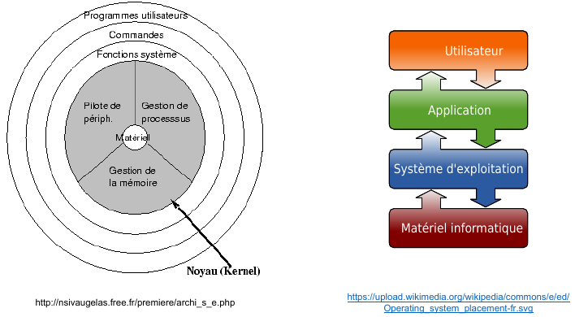

Systèmes d'exploitation¶
Introduction¶
Examinons ensemble le petit script Python ci-dessous :
from os.path import getsize
from tkinter.filedialog import askopenfilename
fichier = askopenfilename()
if fichier:
print(fichier, "fait", str(getsize(fichier)), "octets")
La fonction askopenfilename() génère une boîte de dialogue pour sélectionner un fichier. Si l'utilisateur annule l'opération en fermant la boîte de dialogue, la fonction renvoie une chaîne de caractères vide. Autrement, elle renvoie une chaîne de caractères contenant le chemin du fichier, comprenant le nom du fichier et tous les répertoires nécessaires pour y accéder.
Une fois que le nom du fichier est obtenu, le programme vérifie qu'il n'est pas vide.
Dans ce cas, il affiche le nom du fichier ainsi que sa taille en octets, obtenue grâce à la fonction getsize() de la bibliothèque standard Python. Le programme se termine lorsque l'utilisateur ferme la fenêtre créée par l'appel à askopenfilename().
Ce script met en lumière différentes fonctionnalités fournies par un système d'exploitation :
- Tout d'abord, lors de l'exécution du programme, le reste du système continue de fonctionner sans interruption, ce qui reste transparent à la fois pour l'utilisateur (le programme s'ajoute à la liste des programmes en cours d'exécution) et pour le programmeur (le code est une séquence d'instructions indépendante des autres programmes en cours). Ensuite, on observe que le nombre potentiel de programmes en cours d'exécution peut dépasser le nombre de processeurs de la machine, suggérant que quelque chose permet à tous les programmes de fonctionner en parallèle sans intervention du programmeur.
- Deuxièmement, le programme fonctionne correctement indépendamment de l'emplacement du fichier choisi (disque dur, partage réseau, clé USB). Le programmeur n'a pas besoin d'écrire un code spécifique pour gérer différents périphériques de stockage. De plus, le programme s'exécute de manière cohérente, quelle que soit la taille de l'écran ou le dispositif de pointage utilisé (pavé tactile ou souris).
- Enfin, quel que soit la taille du fichier, le temps d'exécution du programme, une fois le fichier choisi, reste constant. Notamment, la demande de la taille d'un grand fichier est aussi rapide que pour un fichier plus petit. De plus, le programme peut répondre même pour des fichiers très simples (comme des fichiers texte) qui ne contiennent pas leur taille comme information. Ces observations suggèrent que "le système" maintient des méta-données associées aux fichiers, telles que leur taille ou leur type.
Une vidéo d'introduction¶
Voici une petite vidéo d'introduction aux systèmes d'exploitation :
Pour faire l'interface entre le matériel et l'utilisateur, un ensemble de programmes, appelé système d'exploitation (SE ou OS en anglais pour Operating System) "tournent" donc en permanence sur un ordinateur de façon à faciliter son utilisation.
Les utilisateurs utilisent les applications, qui demandent des ressources au système d’exploitation, qui pilote le matériel informatique, le partageant entre différentes applications et différents utilisateurs.
Le système d'exploitation étant proches de la machine, les plus anciens étaient donc écrits en assembleur; actuellement, ils sont généralement écrits dans un langage à mi-chemin entre le bas niveau et le haut niveau, comme le langage C.
Principes généraux et composants logiciels¶
Un système d'exploitation est un programme ou un ensemble de programmes conçus pour gérer les ressources matérielles et logicielles d'un ordinateur. Son rôle principal est de fournir un accès unifié aux ressources de la machine pour les programmes utilisateurs. Le schéma ci-dessous illustre la position du système d'exploitation et ses diverses interactions :

L'utilisateur interagit avec des programmes tels que des jeux, un navigateur web ou un logiciel de traitement de texte. Ces programmes nécessitent l'utilisation des ressources matérielles pour effectuer leurs tâches, comme la lecture ou la sauvegarde de fichiers, l'affichage d'images à l'écran, ou la récupération des caractères saisis au clavier ou de la position du pointeur de la souris. Le système d'exploitation offre un ensemble de fonctions primitives permettant cette interaction avec le matériel. Le système d'exploitation permet à l'utilisateur de s'abstraire du matériel, en fournissant des services communs pour tous les matériels.
Principaux éléments d'un SE
Un système d’exploitation est constitué de différents éléments :
- Le noyau : C’est le cœur du système. Il est lui-même constitué de plusieurs composants logiciels :
- L'ordonnanceur, responsable de la décision quant à quel programme doit s'exécuter à un moment donné sur le processeur.
- Le gestionnaire de mémoire, chargé de répartir la mémoire vive entre les différents programmes en cours d'exécution.
- Les différents systèmes de fichiers, déterminant la manière de stocker les fichiers sur des supports physiques tels que disques, clés USB, disques optiques, etc.
- La pile réseau, implémentant, entre autres, des protocoles tels que TCP/IP (on en parlera lors du chapitre dédié aux réseaux informatiques).
- Les pilotes de périphériques, également appelés "drivers" en anglais, ayant pour objectif de gérer les dispositifs matériels tels que cartes graphiques, disques durs, claviers, etc.
- L'invite de commande : C’est un moyen d’accéder directement à certaines fonctions du système d’exploitation ou à sa configuration. Il existe plusieurs variantes de l’invite de commande (ou Shell en anglais), par exemple
bash,kshetzshsur les systèmes Linux. - L'interface graphique : L’interface graphique est une IHM (Interface Homme Machine) permettant d’interagir avec le système d’exploitation et les applications dans un environnement graphique.
Voici une vidéo proposée par Lumni sur le fonctionnement d'un système d'exploitation :
Historique des systèmes d'exploitation¶
- Avant 1950 : Les premiers calculateurs, comme l'ENIAC (1945), ne disposent pas de système d'exploitation. Ils exécutent un seul programme à la fois, saisi en recâblant physiquement l'ordinateur via la connexion de câbles entre différentes sections effectuant des calculs élémentaires.
- 1956 : GM-NAA I/O est l'un des premiers systèmes d'exploitation. Ce programme opère sur le calculateur IBM 704 et a pour rôle d'exécuter séquentiellement des programmes utilisateurs stockés sur des cartes perforées. Il propose également des routines pour accéder facilement aux périphériques d'entrée/sortie.
- 1967 : MultICS (Multiplexed Information and Computing Service), développé au centre de recherche de Bell Labs et au MIT, est l'un des premiers systèmes d'exploitation à temps partagé, permettant à plusieurs programmes de s'exécuter simultanément. Il influence considérablement les systèmes d'exploitation modernes.
- 1970-1990 : Unix, créé par l'entreprise AT&T et développé à Bell Labs, est l'un des premiers systèmes d'exploitation multitâches et multi-utilisateurs. Ses premières versions sont écrites en assembleur, puis en langage C, créé à cet effet. Une variante d'Unix, la Berkeley Software Distribution (BSD), voit le jour et prospère entre 1978 et 1990.
- 1960-1980 : Les ordinateurs IBM utilisent divers systèmes d'exploitation, différents d'Unix. À partir des années 1980, ils adoptent notamment le système MS-DOS de Microsoft, conçu pour fonctionner exclusivement sur le processeur x86 d'Intel.
- 1980-1990 : Le succès de l'architecture x86 d'Intel et de l'ordinateur personnel (PC) établit MS-DOS comme le principal système d'exploitation pour les particuliers et de nombreux secteurs d'activité.
- 1990-présent : Microsoft développe un système graphique au-dessus de MS-DOS, qui évolue ensuite en un système d'exploitation indépendant, le système Windows. Il devient le système le plus largement utilisé sur les PC après MS-DOS.
- 1984-2001 : En parallèle, Apple commercialise des ordinateurs personnels basés sur l'architecture Motorola puis PowerPC. Ces machines fonctionnent avec le système d'exploitation Mac OS, un système graphique.
- 1991 : Linus Torvalds, étudiant à l'Université d'Helsinki, souhaite modifier le système MINIX (variante d'Unix pour processeurs Intel, développée par Andrew S. Tanenbaum). Ne pouvant diffuser les modifications en raison de la licence logicielle, Torvalds crée son propre système d'exploitation, Linux, qu'il diffuse sous la licence libre GNU GPL.
- 1991-présent : Linux connaît une adoption rapide en raison de sa diffusion sous licence libre, devenant un système d'exploitation courant pour serveurs, calculs et stockage.
- 2001-présent : Apple crée macOS, basé sur BSD, en tant que nouveau système d'exploitation.
- 2007-présent : Apple adapte le cœur de macOS pour les téléphones portables et le commercialise.
- 2008-présent : Google diffuse Android, un système d'exploitation pour téléphones mobiles, utilisant le noyau Linux auquel des programmes et bibliothèques non libres sont ajoutés.
Systèmes libres vs propriétaires¶
Les systèmes d'exploitation Windows, macOS ou encore UNIX sont considérés comme des systèmes "propriétaires" (certains utilisent le terme "privateurs"), ce qui signifie qu'ils ne sont pas libres. Mais qu'est-ce qu'un logiciel libre de manière plus générale ?
Selon Wikipédia, "Un logiciel libre est un logiciel dont l'utilisation, l'étude, la modification et la duplication par autrui en vue de sa diffusion sont permises, techniquement et légalement, ceci afin de garantir certaines libertés induites, dont le contrôle du programme par l'utilisateur et la possibilité de partage entre individus." Le système UNIX ne respecte pas ces droits (par exemple, le code source d'UNIX n'est pas disponible, rendant l'étude d'UNIX impossible). UNIX est donc considéré comme un système "propriétaire", opposé à un système "libre". Il est important de noter que la notion de logiciel libre ne signifie pas nécessairement qu'il est gratuit, bien que cela soit souvent le cas. La confusion entre "libre" et "gratuit" provient de l'anglais, car "free" signifie à la fois "libre" et "gratuit".
En 1991, Linus Torvalds, un étudiant finlandais, décide de créer un clone libre d'UNIX à partir de zéro, car le code source d'UNIX n'est pas public. Ce clone d'UNIX est baptisé Linux (Linus + UNIX).
Voici une courte vidéo racontant l'histoire de Linux avec plus de détails :
La différence fondamentale réside dans le fait que le code d'un logiciel libre (et donc d'un système libre) est public. En général, on peut le modifier ou l'utiliser pour créer de nouveaux produits.
Les logiciels propriétaires sont généralement non ouverts, ce qui rend plus difficile (voire illégal) leur modification.
Les logiciels libres sont souvent entretenus par la communauté, mais peuvent également l'être par des entreprises les utilisant et ayant intérêt à les maintenir efficaces et utilisés par d'autres, garantissant ainsi la disponibilité de développeurs pour contribuer à leur maintenance.
Quant aux logiciels propriétaires, ils sont principalement développés et mis à jour par l'entreprise qui les possède et qui peut décider d'arrêter de les maintenir.
Ce sont deux modèles économiques très différents.
- Systèmes libres : GNU/Linux, GNU/BSD, Android (pas complètement),...
- Systèmes propriétaires : Windows, macOS, iOS,...
Les systèmes d'exploitation libres ont longtemps été perçus comme destinés uniquement aux "geeks" et autres experts en informatique, difficiles à utiliser par le grand public en raison de leur complexité. Cette réputation est aujourd'hui complètement injustifiée, car ils sont devenus aussi conviviaux que les systèmes propriétaires "classiques".
TP - Les commandes Linux¶
À télécharger
Téléchargez les trois fichiers suivants :
- activite_commandes.odt - L'énoncé de l'activité, à compléter directement dans le fichier.
- commandes_linux.pdf - Récapitulatif des commandes Linux essentielles.
- etat_machine.bin - Une sauvegarde d'état de la machine que vous allez utiliser.